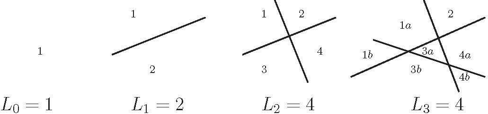
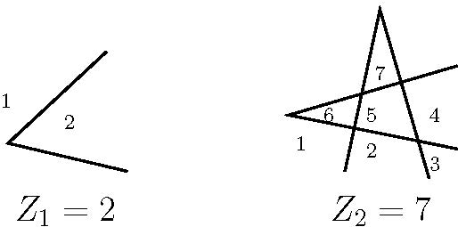
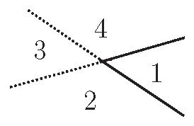
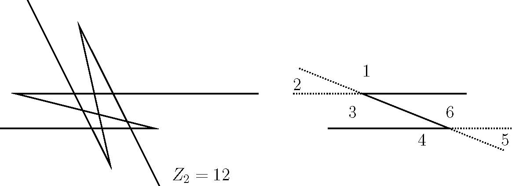

递归问题：瑞士披萨
1 问题描述
用一把披萨刀直直的切 \(n\)刀，可以最多获得多少块披萨？(不要求每块披萨形状一样)。更学术一点的表述为：平面上 \(n\)条直线所能界定的区域的最大个数 \(L_{n}\)是多少？
2 从小入手
按照我们探讨汉诺塔的思路，先从小入手。

图 1: 切1,2,3刀的结果
可以看出第三条直线对原有的三个区域（ 区域1,3,4）进行了分割，使得区域个数增加了三个，而第三条直线与原来的两条直线有交点。推而广之，第 \(n\)条直线可以使得区域个数增加 \(k\)个，当前仅当第 \(n\)条直线对已有的 \(k\)个区域进行了分割；第 \(n\)条直线对已有的 \(k\)个区域进行分割，当前仅当它与已有的 \(k-1\) 条直线有交点。两条直线之多有一个交点，因此这条新的直线与已经存在的 \(n-1\) 条直线至多有 \(n-1\) 个交点，故必有 \(k\le n\)。
3 披萨递归式
通过上节分析，有：
\begin{equation} \label{eq:1} L_{n} \le L_{n-1} + n, n>0 \end{equation}另外，很容易分析，上式中的等号可以达到。只需要在纺织第 \(n\) 条直线时，使得其不予其他直线中的任何一条平行，且新的直线不经过任何已经存在的交点。于是，披萨递归式演变为：
\begin{equation} \label{eq:2} L_{n} = L_{n-1} + n, n>0 \end{equation}对于该递归式，我们需要一个闭式的解（关于什么样的解才是闭式解，请参考《具体数学》第6页的部分论述，此处省略若干字）。通过把披萨递归式展开，我们发现：
\begin{eqnarray} \label{eq:3} L_{n} &=& L_{n-1} +n \\ &=& L_{n-2} + (n-1) + n \\ &=& L_{n-3} + (n-2) + (n-1) + n \\ &\vdots& \vdots \\ &=& L_{0} + 1 + 2 + \ldots + n \\ \end{eqnarray}显然：
\begin{equation} \label{eq:4} L_{n} = 1 + \frac{n(n+1)}{2} ,n > 0 \end{equation}4 拓展1：锯齿刀
现在考虑切割披萨问题的一个变形。假设我们用折线代替直线，每一条折现包含一个锯齿，就像等腰三角形去掉底一样。如下图所示，平面上由 \(n\) 条这样的折线所界定的区域数 \(Z_{n}\) 最多是多少？

图 2: 折形曲线划分平面
从上图的小规模实现可以发现，除了两条直线不经过它们的交点延伸出去外，一条折线和两条直线相同：

图 3: 一条折线和两条直线
区域2,3,4对于两条直线来说是不同的区域，但是在一条折线的情况下是单独的一个区域，于是一条折线相对于两条直线减少了两个区域。如果每条折线的顶点都位于它与其他直线交点之外，每一条折线损失两个区域是固定不变的，于是有：
\begin{equation} \label{eq:5} Z_{n} = L_{2n} -2n = \frac{2n(2n+1)}{2} +1 -2n = 2n^{2} -n +1, n\ge 0 \end{equation}相比较而言，如果 \(n\) 足够大，则 \(L_{n}\)和 \(Z_{n}\) 有如下关系：
\begin{eqnarray} \label{eq:6} L_{n} &\sim & \frac{1}{2}n^{2} \\ Z_{n} &\sim & 2n^{2} \end{eqnarray}即，有 当 \( n \rightarrow \infty\)，\(Z_{n} = 4 L_{n}\)
5 拓展2：Z形刀
假设有 \(n\) 条Z行曲线所定义的区域最大个数是多少？如图所示。 每条Z行线由两条平行的无线半直线和一条直线段组成。

图 4: 一条折线和两条直线
如图所示，分析知： 一条Z线划分生成的区域相当于三条曲线，只是Z形曲线划分的区域比三条曲线要少了5个，其中四个区域是因为直线的不完整造成的，一个区域是因为Z型曲线的两条平行线造成的。所以:
\begin{equation*} Z_{n} = L_{3n} - 5n = \frac{3n(3n+1)}{2} + 1 - 5n = \frac{9n^{2}}{2} - \frac{7n}{2} +1 \end{equation*}6 拓展3: 三维奶酪问题
在一块后奶酪上画出五道直的刀痕，可以得到多少块奶酪？（ 在划奶酪时，奶酪必须保持在它原来的位置上，且每道切痕必定与三维空间中的一个平面相对应。） 求 \(P_{n}\) 的一个递归关系，这里 \(P_{n}\) 表示 \(n\) 个不同的平面所能定义的三维区域的最大个数。